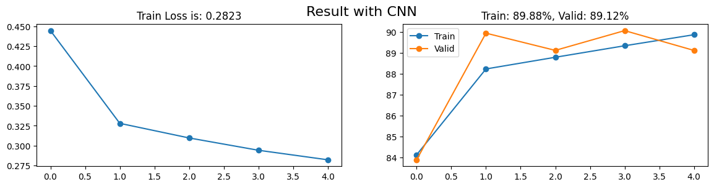

import matplotlib.pyplot as pltfinal_loss = losses.mean(1)[-1]final_train_acc = train_acc.mean(1)[-1]final_valid_acc = valid_acc.mean(1)[-1]fig, axs = plt.subplots(1, 2, figsize = (14, 3))axs[0].plot(range(losses.shape[0]), losses.mean(1), "-o")axs[0].set_title(f"Train Loss is: {final_loss:.4f}")axs[1].plot(range(train_acc.shape[0]), train_acc.mean(1), "-o")axs[1].plot(range(valid_acc.shape[0]), valid_acc.mean(1), "-o")axs[1].set_title(f"Train: {final_train_acc:.2f}%, Valid: {final_valid_acc:.2f}%")axs[1].legend(["Train", "Valid"])plt.suptitle(f"Result with CNN", fontsize =16)plt.show()

x_test = test_dataset.datay_test = test_dataset.targets# Reshape and cast the input datax_test = x_test.view(-1, 784)x_test = x_test.to(torch.float32)x_test_norm = min_max_scale(x_test)# Cast the target labels to the 'long' data typey_test = y_test.to(torch.long)test_loader = load_data(x_test_norm, y_test, batch_size=batch_size, test=True)
Total Mini-Batches: 79
Shape of Each Mini-Batch: torch.Size([128, 784])
test_acc = []model.eval()for i, (x, y) inenumerate(test_loader): out = model.forward(x.to(device)) acc =100* (out.argmax(1) == y.to(device)).float().mean() test_acc.append(acc.cpu())model.train()print(f"Accuracy is: {np.mean(test_acc):.2f}%")
Accuracy is: 87.77%
Save Model
# Save Modelfrom google.colab import drivedrive.mount('/content/drive')model_path ='/content/drive/MyDrive/fnmnist_model.pth'torch.save(model.state_dict(), model_path)
Mounted at /content/drive
# Load the modelmodel = CustomCNN(.1)model.load_state_dict(torch.load('/content/drive/MyDrive/fnmnist_model.pth', map_location=torch.device('cpu')))
<All keys matched successfully>
test_acc = []model.to(device)model.eval()for i, (x, y) inenumerate(test_loader): out = model.forward(x.to(device)) acc =100* (out.argmax(1) == y.to(device)).float().mean() test_acc.append(acc.cpu())model.train()print(f"Accuracy is: {np.mean(test_acc):.2f}%")
Accuracy is: 87.77%
fig, axs = plt.subplots(3, 3, figsize=(16, 8))for ax in axs.flatten():# Select a random index from the output random_index = np.random.choice(len(out))# Display the image at the selected index with colormap gray for correct predictions true_label = y_test[random_index] guess_label = out.argmax(1)[random_index]if true_label == guess_label: ax.imshow(x_test[random_index].view(28, 28), cmap="gray")else: ax.imshow(x_test[random_index].view(28, 28)) ax.set_title(f"Guess: {classes[guess_label]}, True: {classes[true_label]}") ax.axis("off")plt.suptitle("Result", fontsize=16)plt.show()